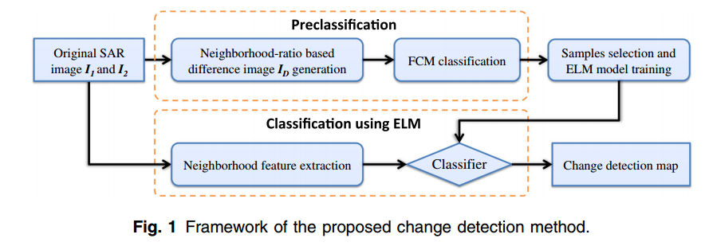

Last modified: 24, March, 2017
Abstract: Change detection is of high practical value to hazard assessment, crop growth monitoring, and urban sprawl detection. A synthetic aperture radar (SAR) image is the ideal information source for performing change detection since it is independent of atmospheric and
sunlight conditions. Existing SAR image change detection methods usually generate a difference image (DI) first and use clustering methods to classify the pixels of DI into changed class and unchanged class. Some useful information may get lost in the DI generation process. This paper proposed an SAR image change detection method based on neighborhood-based ratio (NR) and
extreme learning machine (ELM). NR operator is utilized for obtaining some interested pixels that have high probability of being changed or unchanged. Then, image patches centered at these pixels are generated, and ELM is employed to train a model by using these patches. Finally, pixels in both original SAR images are classified by the pretrained ELM model. The preclassification result and the ELM classification result are combined to form the final change map. The experimental results obtained on three real SAR image datasets and one simulated dataset show that the proposed method is robust to speckle noise and is effective to detect change information among multitemporal SAR images.

[ MATLAB code ]
The demo has not been well organized. Please contact me if you meet any problems.